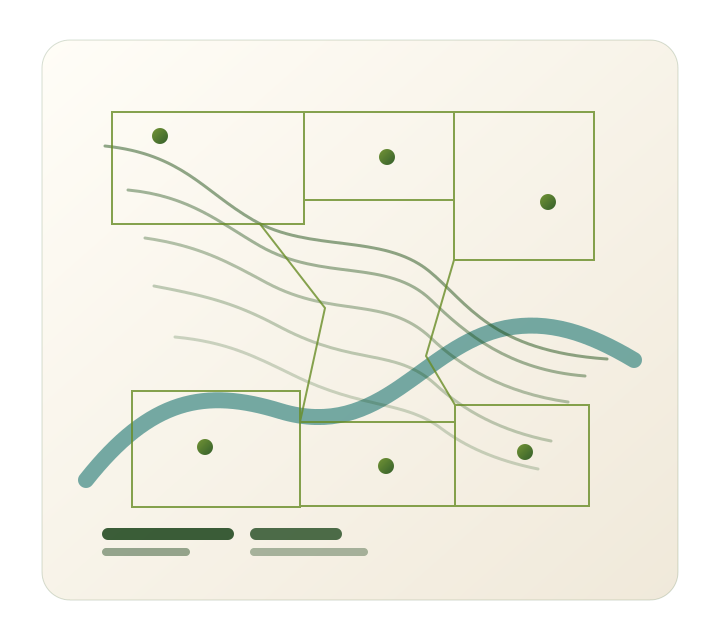

Analista Ambiental
João Carlos Ruiz Casali II
Regularização ambiental, geoprocessamento e recuperação de áreas com visão técnica, experiência de campo e atuação em escala territorial.
Experiência no serviço público e na consultoria ambiental, com atuação em CAR, TCRA, AIA, PGRS, PMGIRS, levantamentos e análises espaciais.

Sobre
Experiência técnica entre o território, os dados e a regularização ambiental
Sou Analista Ambiental com experiência em regularização ambiental, recuperação de áreas degradadas, gestão de resíduos sólidos, geoprocessamento e levantamentos de campo.
Minha trajetória reúne atuação na consultoria ambiental e no serviço público. Na CATI, trabalhei diretamente com proprietários rurais, orientações sobre adequação ambiental e mais de 150 cadastros, declarações ou retificações do Cadastro Ambiental Rural.
Atualmente, no Grupo BIO GS Ambiental, participo de processos de regularização, recuperação ambiental e gestão de resíduos, incluindo acompanhamento de TCRA e AIA, elaboração de PGRS e PMGIRS, levantamentos de campo e produção de mapas e plantas técnicas.
Curso Agronomia nas Faculdades Integradas de Bauru, com conclusão prevista para dezembro de 2027, e busco continuar ampliando minha atuação como Analista Ambiental.
Recuperação de áreas
Geoprocessamento
Gestão de resíduos
Levantamentos de campo
Áreas de atuação
Frentes técnicas conectadas ao ciclo ambiental
Regularização ambiental
CAR, SICAR, análise documental, correções cadastrais e orientação sobre adequação de imóveis rurais.
Recuperação de áreas degradadas
Acompanhamento de TCRA, vistorias, avaliação da regeneração natural, mudas e relatórios técnicos.
Autorizações ambientais
Suporte em processos de AIA, levantamentos ambientais, caracterização e organização técnica.
Gestão de resíduos
Participação em diagnósticos, levantamento de dados, PGRS e PMGIRS.
Geoprocessamento
Produção de mapas, plantas técnicas e análises espaciais no QGIS e AutoCAD.
Campo e caracterização ambiental
Levantamentos, registros fotográficos, caracterização de vegetação e coleta de dados técnicos.
Indicadores
Escala de atuação apresentada de forma agregada
Casos anonimizados
Processos apresentados sem exposição de clientes ou propriedades
Regularização de imóveis rurais
Atendimento técnico, conferência documental, declaração ou retificação, análise no SICAR e orientação sobre adequação ambiental em mais de 150 processos.
Nenhuma propriedade ou proprietário identificado.
Monitoramento de recuperação ambiental
Acompanhamento de áreas vinculadas a TCRA com vistoria, avaliação de regeneração ou mudas, registros e relatório técnico em 10 acompanhamentos.
Não há afirmação de encerramento ou aprovação de processos.
Planejamento e gestão de resíduos
Diagnóstico, levantamento de dados e estruturação técnica para instrumentos municipais e empresariais: 5 PGRS e 2 PMGIRS.
Municípios e organizações mantidos de forma anônima.
Geoprocessamento e levantamentos
Coleta de dados, análise espacial, mapas e plantas técnicas em mais de 50 mapas, vistorias ou levantamentos, abrangendo aproximadamente 10.000 hectares em SP, MG e MS.
Diagramas genéricos, sem coordenadas ou dados reais de clientes.
Experiência
Trajetória entre consultoria ambiental e serviço público
fev. 2026 - atual
Analista Ambiental · Grupo BIO GS Ambiental
- Consultoria ambiental com foco em regularização, recuperação de áreas, gestão de resíduos e documentação técnica.
- Acompanhamento de 10 TCRA e suporte em 5 processos de AIA.
- Participação em 5 PGRS e 2 PMGIRS.
- Levantamentos e caracterização ambiental em campo.
- Mapas, plantas e análises espaciais no QGIS e AutoCAD.
- Atuação em 20 municípios de SP, MG e MS, abrangendo aproximadamente 10.000 hectares.
jun. 2022 - fev. 2026
Técnico Agrícola · Secretaria de Agricultura e Abastecimento do Estado de São Paulo - CATI
- Atendimento e orientação a proprietários rurais.
- Mais de 150 cadastros, declarações ou retificações do CAR.
- Análises técnicas no SICAR.
- Análise e interpretação de documentos.
- Orientação sobre recomposição de vegetação e adequação ambiental.
- Organização de dados e acompanhamento de processos.
Formação e competências
Base acadêmica e repertório técnico
Bacharelado em Agronomia
FIB - Faculdades Integradas de Bauru
Fevereiro de 2023 - dezembro de 2027 (previsão)
Cursos complementares
- Fraudes no Leite - CATI, maio de 2024
- Programa Cacau SP e atualização das informações sobre o CAR - CATI, setembro de 2023
- Noções Básicas de CAR e FALE CAR - CATI, junho de 2023
- Cultivo e Produção de Cana-de-Açúcar - SENAR, abril de 2023
- Atualização Técnica para Uso da Plataforma SICAR e Análise Técnica do CAR - CATI, junho de 2022
Técnica ambiental
- Regularização ambiental
- CAR e SICAR
- Recuperação de áreas degradadas
- TCRA
- AIA
- PGRS
- PMGIRS
- Caracterização ambiental
- Relatórios técnicos
Geoprocessamento
- QGIS
- AutoCAD
- Mapas e plantas técnicas
- Análise espacial
Campo e gestão
- Levantamentos de campo
- Vistorias
- Organização de dados
- Análise documental
- Atendimento e orientação técnica
Contato
Vamos conversar sobre soluções ambientais?
Estou disponível para conversar sobre oportunidades como Analista Ambiental e projetos relacionados a regularização, recuperação de áreas, geoprocessamento e gestão ambiental.
joaocarloscasaliii@hotmail.com linkedin.com/in/joaocarloscasali (14) 99164-6134